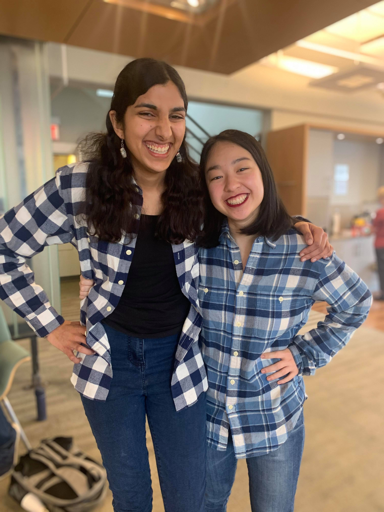
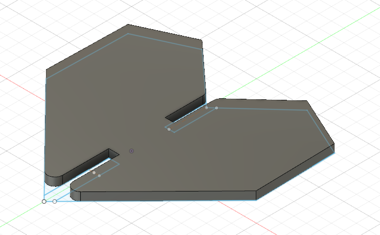
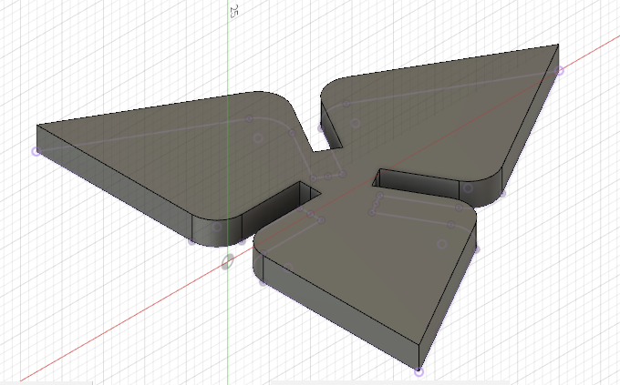
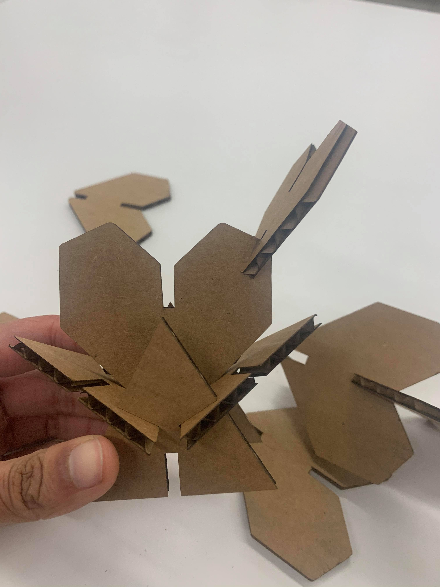
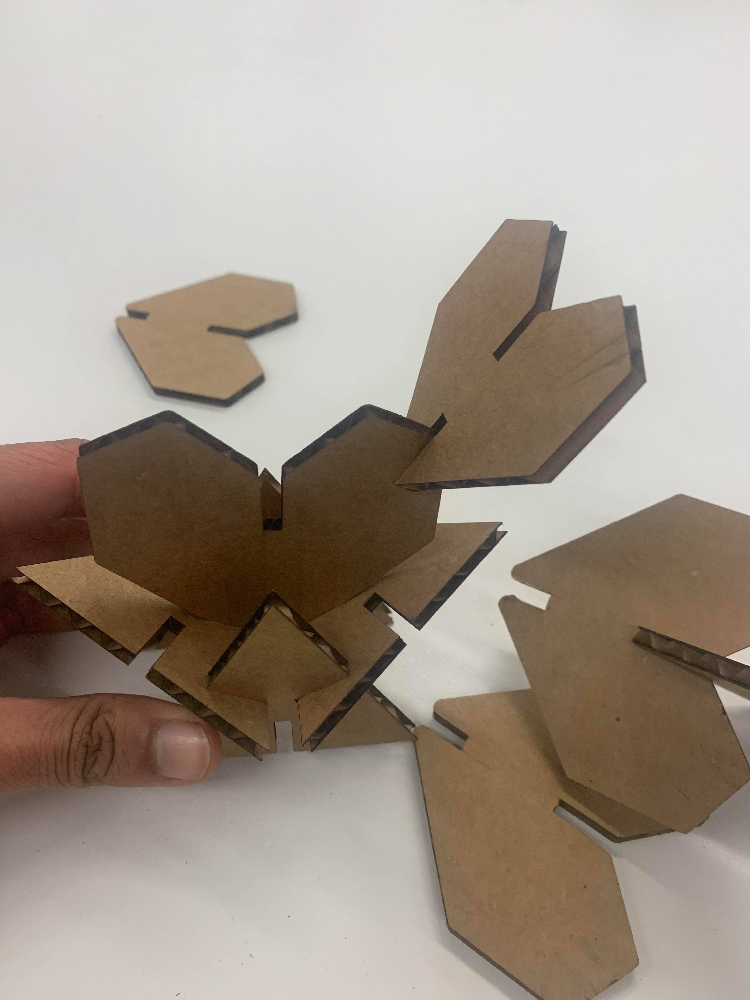
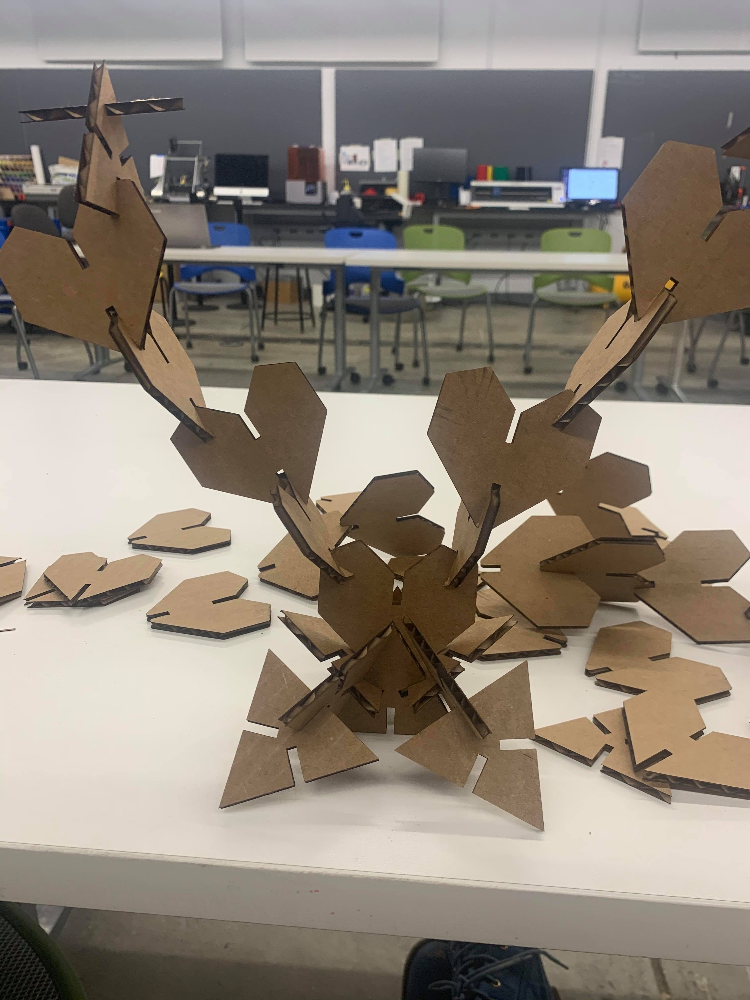
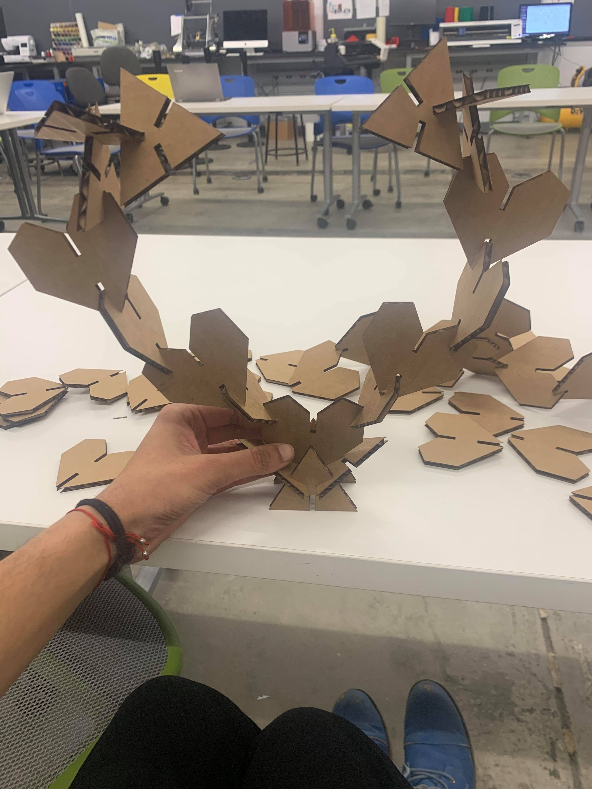
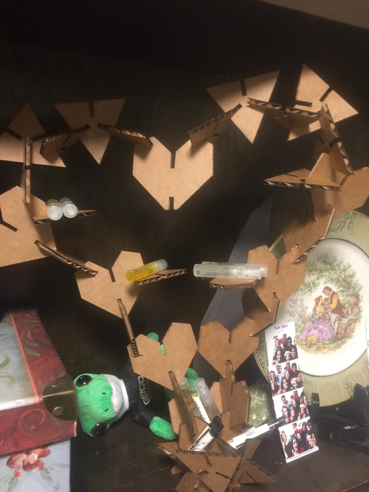
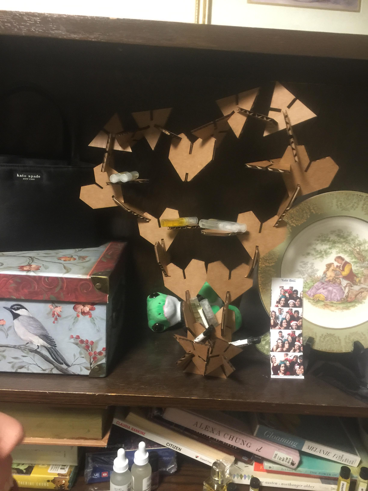
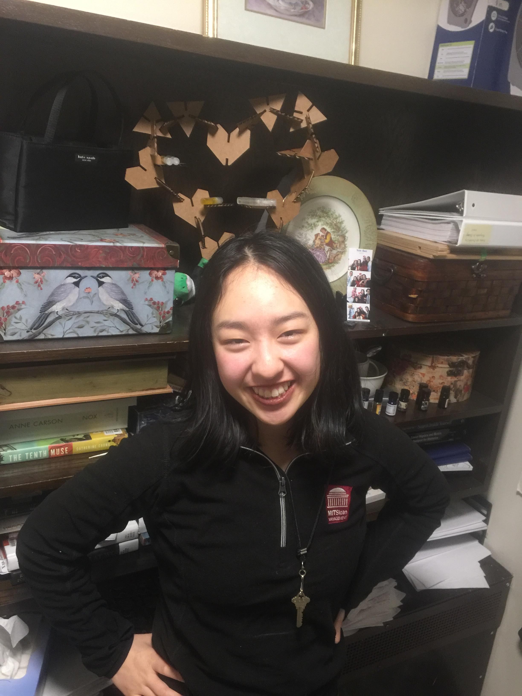

Meet my roommate Valerie (Val), a junior in Mather House studying Statistics.
Val recently has gotten very interested in perfumes, and resultantly has a quite extensive perfume collection, but has no orderly way to keep these perfumes. With Valentine's day approaching, I set out to make Val a heart-shaped press-fit perfume sheld.
The first step of this process was determining how to design the pieces that I could use to make this press-fit construction kit. I could use so many different shapes... but what better shape than hearts to form one bigger heart? I also decided that I would use triangles to help further shape and curve the bigger heart structure and provide support near the base.
After deciding on these pieces, I 2D sketched them in Fusion 360. Check out these pictures of the construction of the heart and triangle pieces with inlets so that they can be pushed together. The thickness of the cardboard I was using was measured to determine the thickness of the inlets and these pieces.
 One thing to keep in mind is that we need to subtract the "kerf" of the laser from the thickness of these inlets. This is because the laser will naturally burn off more cardboard than expected, so we must account for this difference so our pieces fit together.
After designing these pieces, I was ready to laser cut. Yay! This process was overall very fun and gave me some ~mad scientist vibes~, but there was definitely a learning curve. Here, I'll share some tips and tricks I learned from laser cutting.
After cutting (and in some cases recutting) my cardboard hearts and triangles, I was ready to assemble Valerie's Perfume Heart. To do this, I first created a base out of the triangles to place a heart in. This looked like:
 I then made two "wings" of hearts stacked leaning outwards and attached these to the base to make a 45 degree angle with the base.
 Using triangles, I curved these wings inwards and connected them with a final heart. I then added some more hearts and triangles to make shelves and for added stability.
And.... viola! We have a perfume stand for Valerie. Here are some pictures of her with her stand and with the stand holding some perfumes.
 